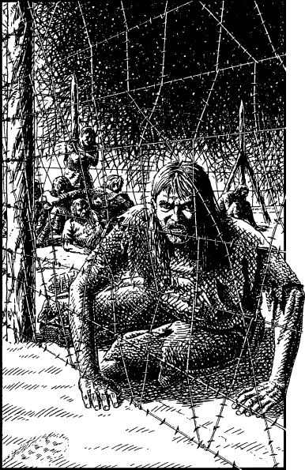

150
Huddled together in a corner of the compound, away from the other prisoners, is a small group of men-at-arms. The fronts of their tattered blue coats bear the emblem of a crown set above the crest of Vadera identifying them to be of the same regiment—the Imperial Vadera Guard—one of Lencia’s finest. Using your Magnakai skills to avoid detection, you make your way to the fence and try to attract their attention. One of their number, a captain, sees you and is immediately suspicious. You signal to him to come closer and, reluctantly at first, he crawls towards the fence.

‘You’re not Drakkarim or Lencian. Who are you? What do you want?’ he hisses, through cracked lips that are blue with hunger and cold. ‘Is this another Drakkarim trick devised to torment us?’
‘This is no trick,’ you whisper in reply, trying hard to reassure him, ‘I’m an ally in the service of your King. I want to help you and your men to escape.’
He holds you with his steely-grey eyes and slowly shakes his head.
‘It’s too late to help us,’ he says, sadly. ‘We’re too weak to resist. Some have tried and they’ve all died in the jaws of the dogs. No, you save yourself, stranger. Forget us.’
‘But if you stay here you’ll starve to death,’ you retort. ‘Surely it’s better to die fighting than waste away. The garrison here is small, barely forty in number. I could cause a diversion and draw their dogs away. Your men may be weakened but still they outnumber the enemy five times over. For Ishir’s sake, man, have you lost the will to live?’
The Lencian captain glances over his shoulder at his starving comrades and, when he turns to face you once more, you see a faint glimmer of hope in his eyes.
‘All of these men have been more than a week without food or shelter. Many have died, many are near to death. I fear they are too weak to fight an enemy who has food in his belly and a sword in his hand. Perhaps … if we had weapons … ’
‘If you do as I say, you’ll have weapons enough to pluck this town from under their very noses,’ you reply, earnestly.
The Lencian narrows his eyes, and for a moment, the trace of a smile softens his gaunt features.
‘Very well, stranger. Tell me your plan.’